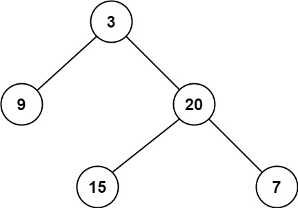

111. 二叉树的最小深度
递归：到叶子才算完整路径返回 1；单孩子分支必须走有孩子的那边（对空边取 min 会错拿空的那边）。
思路
- 空树返回 0；叶子（左右都空）才算一条完整路径，返回 1。
- 只有一个孩子：直接
minDepth(那个孩子) + 1，不能写成min(minDepth(空), minDepth(有))——空边深度 0 会把答案错拉小（如[2,null,3,...]链）。 - 两边都有才用
min(左, 右) + 1。
图解
最优解
1class Solution {2 public int minDepth(TreeNode root) {3 if (root == null) return 0;4 // 到叶子（左右都空）才是一条完整路径，深度 15 if (root.left == null && root.right == null) return 1;6 // 只有一边有孩子：深度必须走有孩子的那边7 if (root.left == null) return minDepth(root.right) + 1;8 if (root.right == null) return minDepth(root.left) + 1;9 // 两边都有：取较小子树深度加 110 return Math.min(minDepth(root.left), minDepth(root.right)) + 1;11 }12}题目
给定一个二叉树，找出其最小深度。
最小深度是从根节点到最近叶子节点的最短路径上的节点数量。
说明：叶子节点是指没有子节点的节点。
示例 1：

输入：root = [3,9,20,null,null,15,7] 输出：2
示例 2：
输入：root = [2,null,3,null,4,null,5,null,6] 输出：5
提示：
- 树中节点数的范围在
[0, 105]内 -1000 <= Node.val <= 1000
题面取自力扣当前版本。
数据快照 2026-11-04。题面版权归力扣所有，本站点仅供本人学习使用，请勿对外发布。